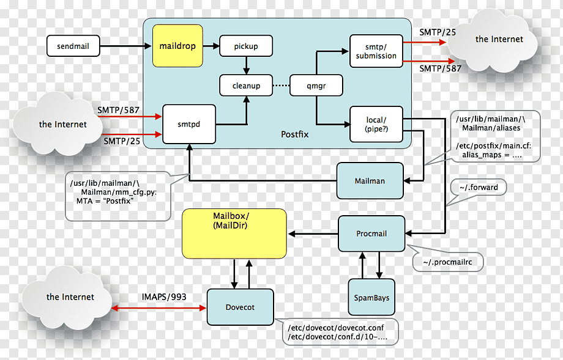

This is the multi-page printable view of this section. Click here to print.
Notebooks
- 1:
- 2: Business Apps
- 3: Cables
- 4: Certbot
- 5: Chroot SFTP Setup
- 6: Cron
- 7: Docker
- 8: Expanding Volumes
- 9: EZproxy
- 10: fail2ban
- 11: Git
- 12: GPG
- 13: Graphing Tool
- 14: Homebrew
- 15: JS Forms
- 16: LVM
- 17: Mailman
- 18: Monit
- 19: networker
- 20: Networking
- 21: Packages
- 22: Perlbrew
- 23: Postfix
- 24: PostgreSQL
- 25: Python4Lib
- 26: React.js
- 27: Samba
- 28: sed & awk
- 29: SIP2
- 30: SSH
- 31: SSL
- 32: SysAdmin Tasks
- 33: Yaz
1 -
https://github.com/topics/pdf-parsing https://github.com/topics/table-extraction
https://github.com/topics/visidata
https://github.com/topics/sierra-api https://github.com/topics/innovative-interfaces
https://github.com/topics/metadata
https://github.com/topics/code4lib
https://github.com/topics/bagit https://github.com/topics/oai-pmh
https://github.com/topics/marcxml-record https://github.com/topics/marc
2 - Business Apps
Sales
Project Management
Security - Social Engineering
Infrastructure and Application Monitoring
Password Management
Website Frameworks and Publishing Platforms
Identity Management & Directory Services
Office Productivity
File Sync and Share
Messaging Platforms
4 - Certbot
Certbot
certbot for Let’s Encrypt with code on GitHub
Common Commands
certbot renewAttempt to renew all certificatescertbot certificatesList all certificatescertbot delete --cert-name domaintoremove.comDelete a certificate
5 - Chroot SFTP Setup
Scenario: Callimachus works at Miskatonic University. Callimachus is working on a project that requires the placement of data files onto a remote server owned by Permissible Data Corp. (PDC). PDC will be processing the files with an automated script and returning them to Callimachus.
You’ll need some users that will only be able to perform chrooted SFTP. You’ll probably want to place them into a group for simplfied administration.
#create SFTP only group
groupadd sftponly
Since we’ll be using this SFTP user group to allow some of our libraries to upload files for automated processing, we’ll call the SFTP directory /incoming, to identify the functional role of the directory in the automated processing chain.
# create user miskatonic, assign to STFP group, and disable SSH access
useradd -g sftponly -d /incoming -s /sbin/nologin miskatonic
Set up the password for user miskatonic
passwd miskatonic
Confirm that you’ve set up this user properly
grep miskatonic /etc/passwd
# miskatonic:x:500:500::/incoming:/sbin/nologin
Modify SSH Configuration
Setting up the chroot jail environment will require the directory path be created to act as the SFTP user’s home directory, a number of modifications to the SSH configuration, and some permissions adjustments.
Let’s start with some SSH configuration changes. You’ll also need to enable the internal-sftp server. To do so, you’ll need to modify the configuration for SSH.
nano /etc/ssh/sshd_config
Comment out the default SFTP server and add the internal SFTP to the SSH daemon config file.
#Subsystem sftp /usr/libexec/openssh/sftp-server
Subsystem sftp internal-sftp
You’ll want to place any users that are assigned to group sftponly into the chrooted jail. You might also want to enable passwordless SFTP access with SSH keys. To make this happen, add a matchpoint to the SSH configuration file and then define the directives for the group.
Match Group sftponly
ChrootDirectory /sftp/%u #%u indicates the user
AuthorizedKeysFile /sftp/%u/.ssh/authorized_keys # SFTP-only user's public key
ForceCommand internal-sftp
You’ll also want to ensure that key-based logins are enabled in the SSH configuration. Find the following lines in /etc/ssh/sshd_config and make sure they are present and uncomments.
Pubkey Authentication yes
RSAAuthentication yes
Create Supporting Directory Structure
Create the substitute /home directory for your SFTP-only users.
mkdir /sftp
Establish the SFTP-only user directory in the new path. This will become the root / for the SFTP-only users.
mkdir /sftp/miskatonic
Since we want our SFTP-only users to see the /incoming directoy when they cd, we’ll need to create it. This will be the location that they place any uploaded files to be processed by the automated script.
mkdir /sftp/miskatonic/incoming
Set up the proper permission on the newly created directory for the SFTP-only user
chown miskatonic:sftponly /sftp/miskatonic/incoming
# root should continue to own /sftp/miskatonic and /sftp
Set up the /.ssh to hold the public keys that will be granted access to an SFTP-only user’s pseudo-home directory.
cd /sftp/miskatonic/
mkdir .ssh
cd /sftp/miskatonic/.ssh
nano authorized_keys # add the public keys to file and save
Set proper permissions for key-based SSH logins
chown -R miskatonic:miskatonic /sftp/miskatonic/.ssh
chmod 700 /sftp/miskatonic/.ssh
chmod 600 /sftp/miskatonic/.ssh/authorized_keys
Restart SSH to pull in the changes
service sshd restart
Test the configuration
These are steps that need to be taken on the client. You’ll need to generate a key-pair for the key-based SSH authentication. Most likely, you’ll want to place the sftp-only key into your user’s /.ssh/ directory.
cd /home/callimachus/.ssh
ssh-keygen -t rsa -b 4096 # Increase bits to 4096 (brute force hardening)
# You can change the name of the keypair to identify its role or function.
# Keep an eye for 'Your public key has been saved in /home/callimachus/.ssh/FILENAME.pub'
You’ll need to copy FILENAME.pub to the remote server’s /sftp/miskatonic/.ssh/authorized_keys file.
Test the connection to the SFTP-only directory from your client.
# if using key-based SSH login
sftp -i /path/to/private-key.pem miskatonic@IPADDRESS
# If not using key-based SSH login:
sftp miskatonic@IPADDRESS
# miskatonic@IPADDRESS password:
sftp> pwd
# Remote working directory: /incoming
6 - Cron
Scheduler Basics
minute:hour:day-of-month:month:day-of-week /command/to/execute.sh
| Field | Values | Notes |
|---|---|---|
| Minute | 0-59 | |
| Hour | 0-23 | |
| Day of Month | 1-31 | |
| Month | 1-12 | |
| Day Of Week | 0-6 | [0 is Sunday] |
Common Commands w/ Cron
crontab -l # List current Linux user's crontab entries
crontab -u <username> -l # List other Linux user's crontan entries
crontab -e # Edit crontab entries
crontab /path/to/cronjobs.txt # Load cron jobs from file
Examples of Crontab Entries
Execute job every ten minutes
*/10 * * * * /path/to/command.sh
Run job every hour, between 8am - 5pm, Monday - Friday
00 08-17 * * 1-5 /path/to/command.sh
Run job twice a day, at noon and 6pm
00 12,18 * * * /path/to/command.sh
Run job at 4:30am on Saturday, send stderr to stdout to null device
30 5 * * 6 /home/s3backup/backup_ftpdata.sh > /dev/null 2>&1
Conditional: Execute job only on 1st Tuesday of the month
0 3 1-7 * * if [ `date +\%a` = Tue ]; then /path/to/ami-genie.sh; fi
At 11:30 on Sunday, download the EZproxy RejectIP Blacklist from GitHub and write the file to /usr/local/ezmanage/includes/global_reject_ip.txt. Send an email with the download details.
30 11 * * 0 root /usr/bin/wget --output-document global_reject_ip.txt https://raw.githubusercontent.com/prbutler/EZProxy_IP_Blacklist/master/EZProxy_IP_Blacklist_RejectIP.txt -O /usr/local/ezmanage/includes/global_reject_ip.txt 2>&1 | mail -s "EZproxy: Refresh RejectIP File" -a "From: someuser \<someuser@epv1.example.org\>" anotheruser@example.org
7 - Docker
Warning
These notes are likely staleBasic Info
- don’t run docker commands as root
sudo usermod -aG docker callimachus - Docker Hub
- Docker Compose
Reference: Docker Commands
docker info
docker inspect
docker exec -it
docker run -d
docker ps -a
docker stop [my_container]
docker rm [my_container]
docker rmi [docker_image]
docker volume rm [my_volume]
docker volume create [my_volume]
docker volume ls
docker volume inspect [my_volume]
docker container ls -aq # list all containers
docker network ls # list them all
docker network prune -a # get rid of them all
Tags
nginx # default to latest
nginx:latest # specifically use tag latest
centos:centos6 # pull centos 6 base image
Lifecycle Management
Run in detached mode (daemon mode), background
docker run -d --name=nginx nginx:latest
Restart Container
docker restart nginx
Execute a command in a container without affecting the running process
# Interactive, attach with a shell.
docker exec -it nginx /bin/bash
List processes
docker ps # Running Processes
docker ps -a # Running and Stopped Processes
remove images, when no containers are based upon it
docker rmi centos:centos6
docker image prune # remove all currently unused imaged docker image prune -a # clear everything
Remove containers
docker rm nginx:old
docker system prune # remove all stopped containers, images, unused networks
Stop all containers. Remove all stopped containers, using bash command substitution
docker container stop $(docker container ls -aq) # stop all containers docker container rm $(docker container ls -aq) # remove all stopped containers docker rmi -f $(docker images -aq)
Docker Inspect
get info about container
docker inspect
get ip address of container
docker inspect nginx:latest | grep IPAddr
Ports and Volumes
volumes
docker volume ls
docker volume rm
docker volume prune
ports
In docker-compose
expose -> reveal ports to the docker environment
ports -> expose ports to docker and to the host system (i.e. publish the ports)
Bind ports
# docker run -d -p HOSTPORT:CONTAINERPORT
docker run -d -p 8080:80 --name=WebServer nginx:latest
Create a mount point in a container
# docker run -d -p 8080:80 --name=webserver -v HOSTVOLPATH:CONTAINERVOLPATH nginx:latest
docker run -d -p 8080:80 --name=webserver -v /home/user/www:/usr/share/nginx/html nginx:latest
BUILDING, using a Dockerfile
# Execute in directory with dockerfile, or define path
docker build -t dzoladz/ubuntu .
Dockerfile
- each step in the build process is a new container
- try to combine mulitple RUN commands when possible
RUN * applies to the base images
CMD * applies to the container instantiated on the base image
EXPOSE * expose container ports to host system
Build a container using a Dockerfile and tag it
docker build -t keycloak-proxy .
docker run -d -p 80:80 -p 443:443 --name=keycloak-proxy keycloak-proxy:latest
# Reload Nginx config in running container
docker exec <container name> nginx -s reload
Applications
Metabase
# NOTE: this will run Metabase without any persistent storage for the application.
docker run -d -p 3000:3000 --name metabase metabase/metabase
ownCloud
docker run -d -p 8080:80 --name owncloud --mount source=/Users/Derek/docker/owncloud,target=/var/www/html owncloud:8.1
Keyclock, Docker for Testing
Notes on the installation of Keycloak using official jboss/keycloak Docker image.
Install Git and Docker
Add the GPG key for the official Docker repo
curl -fsSL https://download.docker.com/linux/ubuntu/gpg | sudo apt-key add -
Add the Docker repository to APT sources
add-apt-repository "deb [arch=amd64] https://download.docker.com/linux/ubuntu $(lsb_release -cs) stable"
Update package database
apt-get update
Install from the Docker repo, not the Ubuntu 16.04 distribution package.
apt-cache policy docker-ce
Install Docker Community Edition and Git
apt-get install -y docker-ce git
Add Keycloak User
Run docker as a non-root user
Create the Keycloak user
adduser keycloak
Add keycloak user to the docker group. No sudo for docker commands
usermod -aG docker keycloak
Launch Keycloak w/ Postgres
Create the Keycloak network
docker network create keycloak-network
Deploy a PostGRES container for the Keycloak app
docker run -d --name keycloak-db --net keycloak-network -e POSTGRES_DB=keycloak -e POSTGRES_USER=keycloak -e POSTGRES_PASSWORD=password postgres
Deploy the Keycloak container
docker run -d --name keycloak-app --net keycloak-network -p 8443:8443 -e DB_ADDR=keycloak-db -e KEYCLOAK_USER=admin -e KEYCLOAK_PASSWORD=password jboss/keycloak
Start Keycloak with Proxy Forwarding for use with Nginx
docker run -d --name keycloak-app --net keycloak-network -p 8443:8443 -e DB_ADDR=keycloak-db -e KEYCLOAK_USER=admin -e KEYCLOAK_PASSWORD=password -e PROXY_ADDRESS_FORWARDING=true jboss/keycloak
8 - Expanding Volumes
At some point, you’re going to run out of space and need to provision some additional storage.
Steps:
- Expand Volume Capacity
- Expand Partition to Volume Capacity
- Extend Filesystem to the size of partition
You’ll need to know a few things like:
What block devices are available?
lsblk
What filesystem am I using on a partition?
file -s /dev/sda1
lsblk -f
blkid
What is the current capacity of storage in the filesystem?
df -h
Grow the first partition to the size of the volume
growpart /dev/sda 1
Resize the filesystem to the size of the partition
command specific to filesystem used, this for ext
resize2fs /dev/sda1
List disk usage -s summarize of a user
du -hs /home/marcload
9 - EZproxy
A snippet of fragments useful for administering EZproxy
Reject connections that originate from IPs outside of Ohio region.
Region codes should be specified using the two-character ISO 3166-2 subcountry code for the US.
GeoLite data must also be configured on EZproxy (see the Location section of the EZproxy manual).
::Common
Set access = "deny";
If Region() eq "OH"; Set access = "allow"
If access eq "deny"; Deny irefused.htm
/Common
Regex for use in the main authentication block. Deny all access, unless the location contains OH, IA, OR MI in the string.
Set access = "deny";
If Region() =~ "/.*(OH|IA|MI).*/"; Set access = "allow"
If access eq "deny"; Deny irefused.htm
The above should be placed before any IfRefused; Deny irefused.htm or IfExpired; Deny iexpired.htm directives in the main authentication block.
It’s also possible to restrict authentication to US-based IPs, using the IfCountry function. IfCountry used the two-letter ISO 3166 Country Codes.
Set access = "deny";
IfCountry US; Set access = "allow"
If access eq "deny"; Deny irefused.htm
NOTE: The above snippet of code needs to be placed within the authentication block to be actively restriction authentication attempts that originate from a non-US country code.
Supply Resource Credentials within an iFrame
There are times when you might need to Find/Replace username and password values within an <iframe> element The example below is a working draft of two auto-triggered functions to input credentials into the proper form fields.
Find </iframe>
Replace </iframe><script>(function() { setTimeout(function() {window.frames[0].document.getElementById('username').value = "USERNAME";}, 1000); })();(function() { setTimeout(function() {window.frames[0].document.getElementById('password').value = "PASSWORD";}, 1000); })();</script>
Regex Validation of SAML Attributes in the Auth: Namespace
SAML authorization check, within shibuser.txt, against the userid attribute released to EZproxy
Authorize
userid, if it begins with 1, 3, or 5. Otherwise, recorduseridand deny withitype.htm
If !(auth:userid =~ "/^(1|3|5).+$/"); Audit -expr auth:userid; Deny itype.htm; Stop
Grab Username, When EZproxy Login with Email Address
This function uses an onclick event hook, i.e. <input onclick="processUsername()" type="submit" value="Sign in">
function processUsername() {
var email = document.getElementsByName('user')[0].value;
var username = email.split('@')[0];
document.getElementsByName('user')[0].value = username;
console.log('the username value submitted is: ' + document.getElementsByName('user')[0].value);
}
Auto-trigger attribute replacement via EZproxy Find/Replace
(function() {
var url = document.getElementById('ctl00_BodyContent_ucShare_txtTitleURL').value;
var fixed_url = url.replace('fod.infobase.com', 'fod-infobase-com');
document.getElementById('ctl00_BodyContent_ucShare_txtTitleURL').setAttribute('value', fixed_url);
})();
OhioLINK EJC - Proxy Rave URLs through EZproxy
This is an example Find/Replace directive which adds jQuery to the OhioLINK Electronic Journal Center’s UI to rewrite article permalinks by prepending a proxy prefix to any RAVE URLs on the item details interface.
Find </body>
Replace <script type="text/javascript">$(document).ready(function() {if (window.location.href.indexOf("bw.opal-libraries.org") > -1) {$('a[href*="rave.ohiolink.edu"]').each(function() {var href=$(this).prop('href');var prefix='https://login.bw.opal-libraries.org/login?url=';var result=prefix+href;$(this).attr("href", result);$(this).text(result);console.log(result);});}});</script></body>
Cron Jobs for Monitoring Activity
10 0 * * * find /usr/local -name messages.txt | xargs grep -E "Unrecognized|DANGER|hosts\s36[0-9][0-9]" | mail -E -s "EZproxy Warning Messages" -a "From: root \<root@{hostname}\>" recipient@derekzoladz.com
20 0 * * * find /usr/local/ezproxy/audit/$(date --date='yesterday' "+\%Y\%m\%d").txt -type f | xargs grep -E "exceeded" | mail -E -s "EZproxy Exceeding Usage Limit" -a "From: root \<root@{hostname}\>" recipient@derekzoladz.com
30 0 * * * find /usr/local/ezproxy/audit/$(date --date='yesterday' "+\%Y\%m\%d").txt -type f -print| xargs grep -E "Login.Intruder.IP" | mail -E -s "EZproxy Login.Intruder.IP" -a "From: root \<root@{hostname}\>" recipient@derekzoladz.com
40 0 * * * find /usr/local/ezproxy/audit/$(date --date='yesterday' "+\%Y\%m\%d").txt -type f -print | xargs grep -E "Session.ReconnectBlocked" | mail -E -s "EZproxy Session.ReconnectBlocked" -a "From: root \<root@{hostname}\>" recipient@derekzoladz.com
00 8 * * 1-5 find /usr/local/ezproxy/cookies -cmin +720 -type f | mail -E -s "EZproxy Sessions Over 12 Hours" -a "From: root \<root@{hostname}\>" recipient@derekzoladz.com
DOI System - Strip Parameters from DOIs
Although valid extensions of the Document Object Model, passing parameters in the doi can cause resolution issues within EZproxy sessions.
{host}?locatt=label:secondary_bloomsburyCollections
SPUEditVar proxy_login=login?url=
SPUEdit @^(https:\/\/doi.org\/)(10.[0-9]*\/)([0-9]*)(\?locatt=label.*)$@${proxy_login}$1$2$3@ir
DOI System - Force Legacy Mode
Force DOI system resolution to the platform of the primary depositor using mode:legacy
SPUEditVar proxy_login=login?url=
SPUEditVar legacy_mode=?locatt=mode:legacy
SPUEdit @^(https:\/\/doi.org\/)(10.[0-9]*\/)([0-9]*)(\?locatt=label.*)$@${proxy_login}$1$2$3${legacy_mode}@ir
Group-based Access to /Loggedin Files
- In
user.txt, create the authenticated group
::group=SecretFiles+Admin.Groups
user:password
- Establish a
../loggedin/directory for the named Group fromuser.txt
./docs/loggedin/SecretFiles
Issue a Manual Call to the Sierra Patron API
Given a Sierra Patron Record containing P BARCODE[pb]=fakeuser1234
curl --interface eth0:48 https://{sierra-server-domain}:54620/PATRONAPI/fakeuser1234/dump
If successful, the call will return patron data; otherwise, a failure message will be returned with additional information to diagnose the issue. For example:
<BODY>ERRNUM=2<BR>
ERRMSG=Record ID not unique<BR>
</BODY>
Temp Access, III Server Migrations
Migrating from local to III-hosted Sierra involves 6-8 hours of server downtime. If EZproxy relies on the Sierra Patron API for authentication, remote database access will be unavailable during the server migration. The following snippet will present /login.htm to the user, but will accept credentials and grant access to all. Use with extreme caution.
::III
Host https://sierra.catalog.org:54620
IfRefused; Ignore
IfInvalid; Ignore
IfUnauthenticated; Stop
/III
Transparent Language & SAML-based SSO
When accessing Ohio’s statewide subscription to Transparent Language Online though an EZProxy instance that connects tp a SAML-based authentication server, the platform will not recognize the IP to allow people to sign up. This solution basically forces everyone to log into EZproxy, but with a RedirectSafe entry so that Transparent Language can look for your EZproxy Referer.
In config.txt, you’ll add the following stanza above any ExcludeIP directives.
# -------------------------------------------------------
# **All users must authenticate through ezproxy**
#
T Transparent Language Redirect
U -Refresh transparent-language https://library.transparent.com/ohio
#
T Transparent Language
U https://library.transparent.com/ohio
HJ library.transparent.com
DJ transparent.com
NeverProxy transparent.com
NeverProxy library.transparent.com
# -------------------------------------------------------
The contents of the HTML file placed in the docs/limited/transparent_langauges.htm file are as follows:
<head>
<meta name="referrer" content="always">
<noscript>
<META http-equiv="refresh" content="0;URL=https://library.transparent.com/ohio">
</noscript>
<title>Redirecting to Transparent Languages</title>
</head>
<script>window.opener = null; location.replace("https://library.transparent.com/ohio")</script>
The SPU for Transparent Languages becomes:
https://login.{EZproxy Hostname}/limited/transparent_languages.htm
10 - fail2ban
Common Commands
- List Active Jails:
fail2ban-client status - Show Banned IPs in sshd Jail:
fail2ban-client status sshd - Manually Unban an IP from a Jail:
fail2ban-client set {jail name} unbanip {ip address} - Manually Ban an IP to a Jail:
fail2ban-client set {jail name} banip {ip address}
11 - Git
Configuration
git config
git config --global user.name "derekz"
git config --global user.email derekz@derekzoladz.com
# Remember my creds for 15 minutes
git config credential.helper cache
# Store my creds in a plain-text .git-credentials file
git config --global credential.helper store
Clone
# Clone a Repository and history
git clone https://github.com/dzoladz/dzoladz.git
# Clone & Rename to 'website'
git clone https://github.com/dzoladz/dzoladz.git website
# Clone a branch, <branch> <remote repo>
git clone -b collab/berick/ansible-installer-ubuntu-16.04 git://git.evergreen-ils.org/working/random.git
Basics
Initialize Git Repository
mkdir repo_name
cd repo_name
git init
Remotes
# Add initial remote named 'origin'
git remote add origin https://github.com/dzoladz/dzoladz.git
# Rename remote 'origin' to 'upstream'
git remote rename origin upstream
# List all remotes
git remote -v
# Remote remote named 'upstream'
git remote rm upstream
Files
# List new and modified files, branch, etc...
git status
# Track file.txt
git add file.txt
# Add all untracked files to be staged for commit
git add .
# Show file differences between previous version and working version
git diff
# Remove file.txt from staging for commit
git reset file.txt
# Remove file.txt from tracking
git rm --cached file.txt
# Undo act of commit
git reset --soft HEAD^
# Rename file.txt
git mv file.txt newfile.txt
# Commit tracked files to repo
git commit -m "COMMIT MESSAGE"
# Push files to remote repository
git push <remote_name> <branch_name>
# Incorporate changes from remote repository
git pull
Branches
# List all branches in the local repository
git branch
# Show all local and remote branches
git branch -a
# Create a branch named 'bugfix'
git branch bugfix
# Switch to branch 'bugfix'
git checkout bugfix
# Delete branch 'bugfix'
git branch -d bugfix
# Merge bugfix into master
git checkout master # local working master branch
git pull origin master # incorporate remote updates
git merge bugfix # merge changes into master
git push origin master # push to remote
Clean up a dirty pull
git stash git pull origin master git stash pop
Search Repo
# Case-insensitive search for files containing `commit`
git grep -i 'commit'
# List files in repo using file globbing
git ls-files *.py
History
# List commit history of current branch
git log
# Show commit d2b557da6450c3dc77766b86d6d7b832af6d3d6a
git show d2b557da6450c3dc77766b86d6d7b832af6d3d6a
# Show commits by specific author
git log --author=dzoladz
Just for Fun
# Who has the most commits in this repo
git shortlog -s -n
12 - GPG
- Get
gpgcommand
brew install gnupg
- Generate GPG key
gpg --full-generate-key
- List GPG keys for
derek@derekzoladz.com
gpg --list-secret-keys --keyid-format LONG derek@derekzoladz.com
- Copy the GPG key ID that starts with
sec. In the following example,488652B776349D07:
sec rsa4096/488652B776349D07 2019-12-14 [SC]
8AAF3B17369BFB6A36171FFA76349D07488652B7
uid [ultimate] Derek Zoladz (None) <derek@derekzoladz.com>
ssb rsa4096/8A3A7957EECFC9AA 2019-12-14 [E]
- Export the public key of that ID
gpg --armor --export 488652B776349D07
-
Copy the public GPG key and it to both GitLab and GitHub accounts
-
Tell Git to use your GPG key to sign commits
git config --global user.signingkey 488652B776349D07
- Tell Git to sign your commits automatically, to avoid using the
-Sflag with every commit
git config --global commit.gpgsign true
- Export GPG key
# temporary
export GPG_TTY=$(tty)
-or-
# add to .bashrc or .zshrc to load at each session
GPG_TTY=$(tty)
export GPG_TTY
13 - Graphing Tool
14 - Homebrew
- Get it!
/usr/bin/ruby -e "$(curl -fsSL https://raw.githubusercontent.com/Homebrew/install/master/install)"
COMMAND CHEAT SHEET
Globals
brew updateupdate packagesbrew list --versionsshow installed packagesbrew cask list --versionsshow installed casksbrew doctorcheck system for potential problemsbrew helpprint help info
Packages
brew install hugoinstall packagebrew uninstall hugouninstall packagebrew cask install atominstall cask atombrew upgrade hugoupgrade a packagebrew switch hugo 0.5.3switch package to specific versionbrew info hugolist versions, caveatsbrew cleanup hugoremove old versionsbrew edit hugoedit formulabrew cat hugoprint formulabrew home hugoopen project homepagebrew pin hugoprevent the specified formulae from being upgradedbrew unpin hugounpin package and allow upgrades
Repos
brew search hugosearch repos based on the substring text.brew tap myrepo/myapptap a personal repo with my own brew formula
Services
brew services start postgresqlstart servicebrew services restart postgresqlrestart servicebrew services stop postgresqlstop servicebrew services listlist service statuses
Hugo - Install Specific Version
- Review commit logs and identify the commit for the version of Hugo you want to install
- Add the commit to the shell script below and execute.
#!/usr/local/bin/bash
FORMULA=hugo
COMMIT=############
RAW_PATH=https://raw.githubusercontent.com/Homebrew/homebrew-core
brew unlink ${FORMULA} && \
brew install ${RAW_PATH}/${COMMIT}/Formula/${FORMULA}.rb
15 - JS Forms
EBSCO
- Article Search
<form action="javascript:submitArticleDatabasesSearch();">
<label for="searchbox">Search for:</label>
<input name="article_searchbox" type="text" placeholder="Enter Keywords">
<span class="search-in">
<label for="database" class="libdata in">in</label>
<select name="database">
<option disabled="disabled" value="">Choose a Database</option>
<option value="a9h">Academic Search Complete</option>
<option value="jstor">JSTOR</option>
</select>
</span>
<input name="article_search_submit" type="submit" value="Search">
</form>
<script>
function submitArticleDatabasesSearch() {
const proxyPrefix = "https://YOUREZPROXYDOMAINHERE/login?url=";
var selected = document.getElementsByName('database')[0].value;
var terms = document.getElementsByName('article_searchbox')[0].value;
if (selected != "") {
console.log("Okay");
if (selected == "a9h") {
console.log("User selected: " + selected);
const ebscoPrefix = "https://search.ebscohost.com/login.aspx?direct=true&scope=site&type=1&site=ehost-live&db=a9h&lang=en&authtype=cookie,ip&ssl=Y&&bquery="
window.location.assign(proxyPrefix + ebscoPrefix + terms)
} else if (selected == "jstor") {
console.log("User selected: " + selected);
const jstorPrefix = "https://www.jstor.org/action/doAdvancedSearch?q0="
window.location.assign(proxyPrefix + jstorPrefix + terms)
} else {
console.log("Unexpected value for select option")
}
} else {
return false;
}
}
</script>
- OneSearch
<form action="javascript:submitOneSearch()">
<select id="search-field" name="search_prefix">
<option selected="selected" value="">Keyword</option>
<option value="TI">Title</option>
<option value="AU">Author</option>
</select>
<input name="bquery" type="text" placeholder="Enter keywords" value="">
<input type="submit" value="Search"><br>
<input id="fulltext_checkbox_all" name="fulltext_checkbox" type="checkbox" class="check">
<label for="fulltext_checkbox_all">Full-Text (online)</label>
<input id="scholarly_checkbox_articles" name="scholarly_checkbox" type="checkbox" class="check">
<label for="scholarly_checkbox_articles">Scholarly (Peer Reviewed)</label>
</form>
<script>
function submitOneSearch() {
const proxyPrefix = "https://YOUREZPROXYDOMAINHERE/login?url=";
const edsProfile = "http://search.ebscohost.com/login.aspx?direct=true&scope=site&site=edslive&profile=eds&authtype=ip,cookie,guest,url,uid&custid=s9003022&groupid=main&";
var search_field = document.getElementsByName('search_prefix')[0].value;
var limit_ft = document.getElementsByName('fulltext_checkbox')[0].checked;
var limit_rv = document.getElementsByName('scholarly_checkbox')[0].checked;
var search_terms = document.getElementsByName('bquery')[0].value;
// Toggle Full-Text Limiter
if (limit_ft == true) {
console.log("Enable FT Limiter");
ft = "cli0=FT&clv0=Y";
} else {
console.log("Disable FT Limiter")
ft = "cli0=FT&clv0=N";
}
// Toggle Scholarly Atricles Limiter
if (limit_rv == true) {
console.log("Enable RV Limiter");
rv = "cli1=RV&clv1=Y";
} else {
console.log("Disable RV Limiter");
rv = "cli1=RV&clv1=N";
}
// Build Search Type
if (search_field != "") {
type = "search_field=" + search_field
} else {
type = "search_field="
}
window.location.assign(proxyPrefix + edsProfile + type + "&" + ft + "&" + rv + "&bquery=" + search_terms)
}
</script>
16 - LVM

References
LVM Storage Management is divided into three parts:
- Physical Volumes (PV) – Actual disks or disk partitions (e.g. /dev/sda, /dev/sda2)
- Volume Groups (VG) – Physical volumes are combined into volume groups. (e.g. VolGroup1 = /dev/sda + /dev/sdb2)
- Logical Volumes (LV) – Volume groups are divided into logical volumes (e.g. VolGroup1 = LogicalVol1/data, LogicalVol2/home)
Commands
Display Disk Information
fdisk -l
Display LVM Mapping
lvmdiskscan
Display Physical Volumes
pvspvdisplay
Display Volume Groups
vgsvgdisplay
Display Logical Volumes
lvslvdisplay
STEPS
- Run LVM Scan to determine available disks -
lvmdiskscan
root@hostname:/# lvmdiskscan
/dev/VolGroup1/LogicalVol1 [ 3.72 GiB]
/dev/sda1 [ 285.00 MiB]
/dev/VolGroup1/LogicalVol2 [ 3.72 GiB]
/dev/VolGroup1/LogicalVol3 [ <20.49 GiB]
/dev/VolGroup1/LogicalVol4 [ 16.76 GiB]
/dev/VolGroup1/LogicalVol5 [ 18.62 GiB]
/dev/sda5 [ <79.72 GiB] LVM physical volume
/dev/VolGroup1/LogicalVol0 [ <7.45 GiB]
/dev/sdb [ 40.00 GiB]
1 disk
7 partitions
0 LVM physical volume whole disks
1 LVM physical volume
- Establish another Physical Volume (PV) for the newly installed SCSI disk /dev/sbd -
pvcreate
root@hostname:/# pvcreate /dev/sdb
Physical volume "/dev/sdb" successfully created.
- List available Volume Groups (VG) -
vgs
root@hostname:/# vgs
VG #PV #LV #SN Attr VSize VFree
VolGroup1 1 6 0 wz--n- 79.71g <8.95g
- Add new PV to current VG (VolGroup1) -
vgextend
root@hostname:/# vgextend VolGroup1 /dev/sdb
Volume group "VolGroup1" successfully extended
- Find the Logical Volume to extend -
lsblk
root@hostname:/# lsblk
NAME MAJ:MIN RM SIZE RO TYPE MOUNTPOINT
fd0 2:0 1 4K 0 disk
sda 8:0 0 80G 0 disk
├─sda1 8:1 0 285M 0 part /boot
├─sda2 8:2 0 1K 0 part
└─sda5 8:5 0 79.7G 0 part
├─VolGroup1-LogicalVol1 253:0 0 3.7G 0 lvm /
├─VolGroup1-LogicalVol2 253:1 0 3.7G 0 lvm /tmp
├─VolGroup1-LogicalVol3 253:2 0 20.5G 0 lvm /usr
├─VolGroup1-LogicalVol4 253:3 0 46.8G 0 lvm /var
├─VolGroup1-LogicalVol5 253:4 0 18.6G 0 lvm /home
└─VolGroup1-LogicalVol0 253:5 0 7.5G 0 lvm [SWAP]
sdb 8:16 0 40G 0 disk
└─VolGroup1-LogicalVol4 253:3 0 46.8G 0 lvm /var
sr0 11:0 1 1024M 0 rom
- Extend the logical volume by 30GB -
lvextend
root@hostname:/# lvextend -L+30G /dev/VolGroup1/LogicalVol4
Size of logical volume VolGroup1/LogicalVol4 changed from 16.76 GiB (4291 extents) to 46.76 GiB (11971 extents).
Logical volume VolGroup1/LogicalVol4 successfully resized.
It’s also possible to extend the logical volume to an exact size, using lvextend -L50G /dev/VolGroup1/LogicalVol4 would expand the LV to 50GB
- Extend the file system on
/dev/VolGroup1/LogicalVol4to include the new storage capacity -resize2fs
root@hostname:/# resize2fs /dev/VolGroup1/LogicalVol4
resize2fs 1.44.1 (24-Mar-2018)
Filesystem at /dev/VolGroup1/LogicalVol4 is mounted on /var; on-line resizing required
old_desc_blocks = 2, new_desc_blocks = 3
The filesystem on /dev/VolGroup1/LogicalVol4 is now 12258304 (4k) blocks long.
17 - Mailman
/usr/lib/mailman/binMailman Operator Binaries
-
Remove an email address from all lists on the server
remove_members --fromall --nouserack username@domain.edu -
Add a single user to a list
echo 'username@domain.edu' | add_members -r - listname -
List Membership
list_members listname -
Export Member List for Migration
list_members --fullnames -o membership.txt listname -
List All Mailing Lists
list_lists -
Find a Member in All Lists
find_member username@domain.edu
Migration Tasks
Mailman provides a few scripts to assist with migration tasks. Check out those scripts to see if something is already available for a specific task before using the one-liners below.
- Move List Archives to Another Server
scp -r /path/to/list_archive user@mailman.example.org:/var/lib/mailman/archives/private/list_archive
- Fix the Hostname in
*.htmlArchive Files
find . -type f -name "*.html" -print0 | xargs -0 sed -e 's/list.ohionet.org/lists.ohionet.org/g'
18 - Monit
Setup Notes
You’ll need to ensure that the standard mailutils are installed on the server.
apt-get install postfix mailutils
Afterwards, modify the /etc/monit/monitrc file by uncommenting the following lines to enable emailed notifications
set mailserver localhost #Use localhost for email delivery.
set mail-format {
from: monit@$HOST
subject: monit alert -- $EVENT $SERVICE
message: $EVENT Service $SERVICE
Date: $DATE
Action: $ACTION
Host: $HOST
Description: $DESCRIPTION
}
set alert derekz@example.org #Alert recipient
If you want to store notifications for dispatch, you’ll need to enable the notifications queue.
set eventqueue
basedir /var/lib/monit/events # notifications store
slots 100 # limit the queue size
I don’t need to be informed when the instance state has changed or reloaded, so I silence those alerts by uncommenting this instance filter
## Do not alert when Monit starts, stops or performs a user initiated action.
set alert derekz@example.org not on {instance}
Make sure to comment out any include file directories at the end of /etc/monit/monitrc. If a path is in the configuration file, but the file does not exist, monit will fail to start.
Commands
Monit Daemon
monit
monit reload
monit status
monit quit
Test Configuration
monit -t
Controlling Monitors
monit unmonitor all
monit monitor all
Alerts
Alert if new MARC files are added or removed from a directory
check directory marcfiles with path /home/admin/marc/
if changed timestamp then alert
Alert if registered users file has not been updated in the past 24 hours
check directory registeredusers with path /home/admin/users
if timestamp > 24 hour then alert
Call home every 500 cycles
check file testalert with path /.nonexistent
alert derek@example.com with reminder on 500 cycles
Alert on low disk space
check filesystem rootfs with path /
if space usage > 90% then alert
Monitor System Load
check system example.com
if loadavg (1min) > 4 then alert
if loadavg (5min) > 2 then alert
if memory usage > 75% then alert
if swap usage > 25% then alert
if cpu usage (user) > 70% for 2 cycles then alert
if cpu usage (system) > 30% for 2 cycles then alert
if cpu usage (wait) > 20% for 2 cycles then alert
Double check the automated Let’s Encrypt SSL renewal process
check host mmonit.com with address mmonit.com
if failed
port 443
with protocol https
and certificate valid > 30 days
use ssl options {verify: enable}
then alert
Restart EZproxy, if service halts
check process ezproxy with pidfile /var/run/ezproxy.pid
restart program = "/usr/local/ezproxy/ezproxy restart"
if failed port 80 protocol http for 2 cycles then restart
Alert on Apache Timeouts
check file apache-error with path /var/log/apache2/error.log
if match "^timed out" then alert
Process patrons when a new file is uploaded
check directory patrons with path /home/admin/patrons/
if changed timestamp then exec "/home/admin/scripts/process-patrons.py"
19 - networker
Warning
Moved to CommvaultService
Daemon is nsrexecd
service networker stop
service networker start
Logging
Logging for previous versions of Networker configured logs to /nsr/logs/daemon.raw
Enter Administrative Shell of Networker
nsradmin -p nsrexec
Render .log from .raw
cd /nsr/logs/
nsr_render_log -mepathy daemon.raw > daemon.log
View most recent 25 entries in log
tail -n 25 daemon.log
View logging configuration
From nsradmin shell:
print type: NSR log
Update Runtime Loggging Location
update runtime rendered log:/nsr/logs/daemon.log
Configure master server at /nsr/res/servers
echo "[backup server domain]" >> /nsr/res/servers
Connection Issue
Render daemon.raw and check latest entries.
Refresh Networker
- Stop Networker service
- Rename “res” to “res.old”
- Rename “tmp” to “tmp.old”
- Start Networker service
- Move “res.old/servers” to “res/servers”
Fresh Install
- Navigate to the location of the
.deb sudo apt install ./networker_client.deb
Reset Peer Information
From nsradmin shell
print type: nsr peer information
delete
External Links
20 - Networking
Google Cloud
Installing the SDK https://cloud.google.com/sdk/docs/
A Few Commands for Migrating a DNS zone
gcloud auth login --project managed-dns-migration
gcloud dns managed-zones create myzone --dns-name="myzone.org" --description="Zone for all the things" --visibility=public
gcloud dns record-sets import -z=myzone --zone-file-format /path/to/zonefile/myzone.org.zonefile.txt --delete-all-existing
gcloud dns managed-zones describe myzone
DNS
General DNS commands
dig
# Query Cloudflare primary DNS to reply with the name servers for the cool-cat.org domain
dig +short NS cool-cat.org 1.1.1.1
# Ask for the name servers every 2 seconds. Useful for monitoring propagation
watch dig +short NS cool-cat.org 1.1.1.1
21 - Packages
Intro
What is a Package?
An archive file format containing source code, executable files, and metadata used by a package manager.
What is a Package Manager?
A tool to manage installed applications, automatically compute dependencies, and figure out what things should occur to install packages.
Debian-based (Debian, Ubuntu)
Package Format
.deb package format .snap (single, compressed filesystem)
Package Manager
dpkg - can install .deb directly apt - works with software repos
# Example - Search for a linux-image and install it.
apt search linux-image | grep linux-image-4.18.0-22-generic
apt install linux-image-4.18.0-22-generic
update-grub
reboot
RedHat-based (Fedora, CentOS, Amazon Linux)
Package format
.rpm package format
Package Manager
22 - Perlbrew
- Get it
curl -L https://install.perlbrew.pl | bash
- Add
perlbrewto your PATH
COMMAND CHEAT SHEET
Initialize
perlbrew init
Get Crack’n
perlbrew availableperlbrew install 5.30.0perlbrew listperlbrew switch 5.30.0> set as default
Turn it off completely. Useful when you messed up too deep.
-perlbrew off
Install cpanm | a script to get, unpack, build and install modules from
CPAN.
perlbrew install-cpanmcpanm Module::Name
23 - Postfix

Blacklist & Whitelist with Postfix
1. Create a file of IPs to blacklist - Postfix Reference
Create a reject.cidr file in /etc/postfix. To it, add one or more problematic IPs or ranges from your logwatch reports, mail logs, email headers, etc.:
192.168.1.1 OK
192.168.0.0/16 REJECT
2001:db8::1 OK
2001:db8::/32 REJECT
FROM THE DOCS - Rule order matters! Place specific whitelist entries before general blacklist entries.
2. Hash the reject.cidr file - Postfix Reference
The reject.cidr file must be converted to a database that Postfix can read. This must be done every time reject.cidr is updated.
postmap /etc/postfix/reject.cidr
3. Update /etc/postfix/main.cf - Postfix Reference
Postfix needs to be made aware of the new IP blacklist. To alert Postfix of the blacklist, you’ll need to add the following to main.cf. - Postfix Reference
smtpd_recipient_restrictions =
check_client_access cidr:/etc/postfix/reject.cidr
FROM THE DOCS - Placing a block list at the beginning of the smtpd_recipient_restrictions parameter ensures that the IP blocks are obeyed above all other processing, but just as importantly, prevents more-expensive operations, such as virus scanning and spam scoring, from running when the outcome is predetermined.
4. Reload the Postfix configuration
Execute the following command
/etc/init.d/postfix reload
5. Check the Postfix log
Check mail.log to confirm that there weren’t any errors reading the new configuration. The following command should be sufficient in most cases.
tail -n 20 /var/log/mail.log
Taking it Further
There are two parameters we can set in postfix, which acts differently.
check_client_access: Block by client IP, client IP range or Hostnamecheck_sender_access: Block by sender e-mail address (FROM field)
24 - PostgreSQL
First Steps
- Install PostgreSQL, preferably a pinned version
brew install postgresql@10
- If you don’t have one, get the
psqlclient.
brew install libpq
libpqwon’t install itself in the/usr/local/bindirectory like other Homebrew applications. To make that happen, you need to run:
brew link --force libpq
- Start Postgres services
brew services start postgresql
Check
brew info postgresql
- Create a database, and…
createdb `first`
Fix role “postgres” does not exist error
createuser -s postgres
Initial Reading
PSQL
- Run psql client as user postgres -
psql -U postgres - Connect to local postgres database as a specific user - `psql -h localhost -U <postgres_user>
``
Quick Start
\?- List all available commands\q- Quit/Exit\l- List databases\c <database>- Connect to a database
Up and Running, Informational
-
\d- List tables -
\d <table>- Show table definition, including triggers -
\d+ <table>- Show additional info about a table -
\dy- List events -
\df- List functions -
\di- List indexes -
\dn- List schemas -
\dv- List views -
\e- Open default text editor in psql shell -
\copy (SELECT * FROM __table_name__) TO 'file_path_and_name.csv' WITH CSV- Export a table as CSV
Settings
\timing- Turn on query timing\x- Pretty-format query results
Backup and Restore
Backup, plain text
pg_dump <dbname> > db.sql- plain text
Backup, for persistence and storage
pg_dump -Fc <dbname> > db.bak- compressed binary formatpg_dump -Ft <dbname> > db.tar- tarball format
Restore
If the database already exists,
pg_restore -Fc db.bak- restore compressed binary formatpg_restore -Ft db.tar- restore tarball format
If creating the database new from a dump, you’ll need to add the -C flag.
Import, as a new database
Create the database
createdb -T template0 <dbname>
Import database from dump
pg_restore --clean --no-owner --verbose -d <dbname> db.bak-
Database Commands, outside of psql
- Create database
createdb <database_name> - Drop database
dropdb <database_name> - Restore database
pg_restore --no-owner --dbname <database> <database.dump>
Database Commands, inside of PSQL (DON’T FORGET ;)
- Create database
CREATE DATABASE <database> - Remove database
DROP DATABASE <database>
25 - Python4Lib
Records
- https://github.com/kennethreitz/records
- Okay if you just want some tabular data in a single sheet
OpenPyxl
- https://openpyxl.readthedocs.io/en/stable/
- Manipulating xls, xlsx files
XMLtoDict
Paramiko
ftputil
PyMarc
pybibframe
CSV
Built in JSON
PyYAML
Psycops2
- https://pypi.org/project/psycopg2/
- PostgreSQL adaptor
Shutil
Fuzzy Wuzzy
pikepff
csvkit
26 - React.js
Some initial notes during the exploration of React.js JavaScript library.
Draft
Everything on this page is in draft-mode. Expect errors, amendments, oversights, and corrections.
Quick Start
- Facebook’s create-react-app
- MDN web docs - JavaScript
- Compatibility checks with browser via Babel
- Reusable components! bit
CONTENTdm Documentation
CONTENTdm provides JavaScript Customization Docs to facilitate a general understanding of the React-based CONTENTdm application.
CSS Classes
CSS Classes are broken down into the following classifications:
Website-level classes Component-level classes Page: Global classes Page: Collection-level classes
JavaScript Events
A special event fires at the initial load of the application: cdm-app:ready. This event fires once for a given end-user session and is the earliest time point in the application lifecycle.
:enter
:ready
:update
:leave
In CONTENTdm, if the URL does not change, then the end user action is most likely happening simultaneously with an :update event.
List of Lifecycle Events
The CONTENTdm application provides a CustomEvent() object within the lifecycle of the application and page render
document.addEventListener('cdm-home-page:enter', function(e){
// e is instance of CustomEvent
// ...
});
Customization Cookbook
There’s also a Recipe Portal with downloadable code and demonstration sites.
27 - Samba
STEP 1
## --------------------------
## Set up Storage Block Disk
## --------------------------
# list block devices
lsblk
# Delete partitions and reboot
sfdisk --delete /dev/sda
# Write Files system
mkfs.ext4 -j -L SambaStorage /dev/sda
# List block ids
blkid
# update file system table
vim /etc/fstab
# mount all volumes in fs table
mount -a
# reboot
reboot
STEP 2
## -------------------------
## Install Samba
## -------------------------
# Install Samba
apt-get install samba
STEP 3
Update Samba Configuration to listen only to local network
/etc/samba/smb.conf. The following are snippets, not a complete samba
configuration file.
[global]
#### macOS definitions #####
min protocol = SMB2
spotlight = yes
fruit:metadata = stream
fruit:model = MacSamba
fruit:posix_rename = yes
fruit:delete_empty_adfiles = yes
# SAMBA USER ACCOUNTS
[derek]
path = /samba/users/derek
browseable = yes
writeable = yes
read only = no
fruit:aapl = yes
fruit:time machine = yes
vfs objects = catia fruit streams_xattr
force create mode = 0660
force directory mode = 2770
valid users = derek
STEP 4
# Test Config after Changes
testparm
# Restart services
systemctl restart smbd
systemctl restart nmbd
## -----------------------
## Create users
## -----------------------
useradd -M -d /samba/users/derek -s /usr/sbin/nologin -G sambashare derek
mkdir /samba/users/derek
chown derek:sambashare /samba/users/derek
chmod 2770 /samba/users/derek
smbpasswd -a derek
smbpasswd -e derek
STEP 5
## ------------------------
## Connect from macOS
## ------------------------
# Connecting from macOS on local network static IP
# LAN DNS via PiHole
smb://backup.derekzoladz.com/derek
28 - sed & awk
sed (stream editor)
To perform an operation, use sed -i; otherwise, sed performs a dry-run.
You got 60+ logrotate configuration files in /etc/logrotate.d and you need to add the delaycompress directive, after the compress directive, to each of the files. The name of each configuration file that needs to be updated begins with ezproxy_. No problem!
sed '/compress/a\ delaycompress' ezproxy_*
You’ve got 60+ Let’s Encrypt certificate .conf files that you need to increase
the delay for propogation of the DNS TXT file challenge. In the example below,
if a line in the configuration file contains dns_google_propagation_seconds,
find the value 60 and replace it with the value 90.
sed '/dns_google_propagation_seconds/s/60/90/' *.conf
You need to add a temporary set of limited administrative credentials to all of
your user.txt files and you want to the new code after either ::limit=2 or
::Limit=2.
find . -iname user.txt -exec sed '/::[lL]imit=2/a ::group=+Admin.StatusUpdate+Admin.Restart \
username:password \
::group=-Admin.StatusUpdate-Admin.Restart' {} \;| less
Or, when a vendor transitions to HTTPS and you need to update 60+ EZproxy stanzas to specifically allow a new protocol.
Here are a few one-liners:
# Print All Matching Lines
sed -n '/^IncludeFile.*/p' config.txt
# Print the First Occurrence of Matching Line
sed -n '/^IncludeFile.*/ {p;q}' config.txt
# Print Last Occurrence of a Match
tac config.txt | sed -n '/^IncludeFile.*/ {p;q}'
awk (columnar data processor)
Read through a directory of log files, find entries for a specific user, sort the results, print only the “interesting” data points
grep -rni "username" | sort | awk 'BEGIN {OFS="\t"}; {split($1,date,":"); print date[3], $2, $3, $4}'
You can also find IPs that hit the proxy server most frequently
awk '{ print $4}' $PATH_TO_LOGFILE | sort | uniq -c | sort -nr | head -n 20
29 - SIP2
Connect
telnet cool-cat.org 6001
Format to pass credentials
9300CN<username>|CO<password>|CP<institutionid>
9300CNdz1|CO<password>|CPCOOL
connection responses
- 941 # success
- 940 # failed
Patron information request
6300320170218 201700 AO<institutionid>|AA<patronbarcode>
30 - SSH
- Generate Keys ed25519
ssh-keygen -t ed25519
- Use an SSH config file:
~/.ssh/config
31 - SSL
The private key used to generate a CSR needs to match the private .key file placed on the server to match the .crt file.
X509 File Extensions
| Extension | Description |
|---|---|
| .der | Binary DER encoded certificates. These files may also bear the CER or the CRT extension. |
| .pem | Extension is used for different types of X.509v3 files which contain ASCII (Base64) armored data prefixed with a “—– BEGIN …” line. |
| .crt | Used for certificates. The certificates may be encoded as binary DER or as ASCII PEM. The CER and CRT extensions are nearly synonymous. |
| .cer | Alternate form of .crt (Microsoft Convention) |
| .key | Used both for public and private keys. The keys may be encoded as binary DER or as ASCII PEM. |
Generate the necessary files
# generate the private RSA key
openssl genrsa -out some-domain-private.key 2048
# Generating the CSR
openssl req -new -key /path/to/some-domain-private.key -out /path/to/some-domain.csr
# Generate .p12 bundle, PKCS #12
openssl pkcs12 -export -out some-domain.p12 -inkey some-domain-privatekey.pem -in some-domain-cert.pem -certfile some-domain-intermediatecert.pem
PEM encoded certificates are not human readable.
openssl x509 -in some-domain.pem -text -noout
openssl x509 -in some-domain.cer -text -noout
openssl x509 -in some-domain.crt -text -noout
Viewing .der certificates
openssl x509 -in some-domain.der -inform der -text -noout
Viewing .csr information
openssl req -text -noout -verify -in filename.csr
Check if a private key matches a certificate. If the results of the following commands match, the private key is a match to the certificate.
openssl x509 -noout -modulus -in some-domain.crt | openssl md5
openssl rsa -noout -modulus -in some-domain.key | openssl md5
General
- Check Available Entropy (0 - 4096):
cat /proc/sys/kernel/random/entropy_avail - Watch Available Entropy:
watch -n .1 cat /proc/sys/kernel/random/entropy_avail
Supporting low entropy states with the HAVEGE algorithm
# Ubuntu, install haveged package
apt-get install haveged
# Tuning - /etc/default/haveged
# -w sets low entropy watermark (in bits)
DAEMON_ARGS="-w 2048"
# Start Service at reboot
update-rc.d haveged defaults 00 99
# test system entropy
apt-get install rng-tools
# Run FIPS-140 tests
cat /dev/random | rngtest -c 1000
Ask the urandom device to spit out 1k of gooey randomness
head -c 1k /dev/urandom | tr -dc 'a-zA-Z0-9!@#$%^&' | fold -w 100 && printf "\n"
32 - SysAdmin Tasks
Convert PuTTY SSH2 Public Key to OpenSSH
ssh-keygen -if ssh2publickey.pub >> opensshpublickey.pub
Identify Responding Server
curl -s -I sts.psychiatrist.com|sed -n 's/^S[erv]*: //p'
Byte Order Mark (BOM)
When EZproxy configuration files are edited in Microsoft NotePad, EZproxy will complain - upon restart - about the single byte character  that begins the config.txt file. EZproxy expects UTF-8 encoding that does not start with a non-ASCII byte, like a BOM.
Using vim, does current file have a BOM?
:set bomb?
Remove BOM and write file back to disk:
:set nobomb
Print the Number of Lines in a File
Because I can never remember the command I need
wc -l <file>
Delete Old Kernels, Classic Version
uname -r # the kernel in use
dpkg -l | grep linux-image | awk '{print$2}'
apt remove --purge linux-image-3.1.0-131-generic
update-grub
Convert .mov -> .mp4 With FFMPEG
ffmpeg -i Untitled.mov -vcodec h264 -acodec mp2 Untitled.mp4
Convert .pdf -> .jpg with ImageMagick
# %d will iterate using 1 digit, %3d 3 digits
convert -density 150 art.pdf -quality 90 %d.jpg
Find the Size of a Directory
du -hs /path/to/directory
Locate all files with a specific name in the entire directory and search through those files for a line of text using regex, sort
find . -iname config.txt -exec grep "^[A-Za-z ]*\.ohionet\.org" {} \; -print | grep Name | sort
Imagemagick, Convert to Progressive JPEG
entire directory
mogrify -interlace plane *.jpg
single file
convert inputfile.jpg -interlace plane outputfile.jpg
Progressive JPEG will state, Interlace: JPEG
identify -verbose file.jpg
Globbing
# Minutes flag
-mmin +360
# Days flag
-mtime +7
# Include only files with an extension of 'txt'
find /sftp/plc/incoming/ -type f -name '*.txt' -print0
# Exclude any directories with a name that start with 'pl'. Include only files older than 30 hours.
find /sftp/[^pl]*/incoming/ -type f -mmin +1800 -print0
# Include directories with a specific name. Remove all matching files that are older than 30 hours.
find /sftp/[\(antioch\|findlay\|franciscan\|wilmington\)]*/incoming/ -type f -mmin +1800 -print0 | xargs -r0 rm --
Tuning with Sysctl
File Location on Ubuntu
nano -w /etc/sysctl.conf
Count instances of SYN received
netstat -ant|grep SYN_RECV|wc -l
Check States
netstat -nta | egrep "State|443"
netstat -nta | egrep "State|80"
Check Current Value for Parameter
sysctl -n net.ipv4.tcp_syncookies
sysctl -n net.ipv4.tcp_max_syn_backlog
sysctl -n net.ipv4.tcp_synack_retries
sysctl -n net.core.somaxconn
Reload configuration
sysctl -p
Batch Updating Files on the Server
Find files owned by a user
#find {path} -user {username}
find /usr/local -user derek
Find files assigned to a group
find {path} -group {username}
find /usr/local -group derek
Change Ownership or Group
#chown --from=olduser newuser * -R
chown --from=david derek * -R
chown --from=:1053 :derek * -R
Show Me the Redirects!
wget http://libguides.heidelberg.edu/asc 2>&1 | grep Location:
33 - Yaz
Install Homebrew
/usr/bin/ruby -e "$(curl -fsSL https://raw.githubusercontent.com/Homebrew/install/master/install)"
Install Yaz
brew install yaz
Read the YAZ Docs, find a z39.50 target, review bib-1 attribute set, and give it a whirl.
# start Yaz connection to Library of Congress z39.50
# z39.50 server is running on port 7090, via voyager
yaz-client z3950.loc.gov:7090/voyager
# open the connection for searching
open z3950.loc.gov:7090/voyager
# Send a boolean query
find @and cats hot
# Use Bib-1 Attributes (find "" in 245)
find @attr 1=4 "rocco di pietro"
# Use Bib-1 Attributes to search ISBN
find @attr 1=7 "9780674015432"
# Return one record
s 1
# Change record format
format xml
format marc21
# Display client settings
list_all
# capture records in file
set_marcdump /Users/Derek/Desktop/download.mrc
# find available commands and options
help
# close the connection
close
# Exit the client
exit
Innovative Interfaces, Sierra
The standard z39.50 port is 210
# Yaz connection to State Library of Ohio z39.50
yaz-client catalog.library.ohio.gov:210/innopac
# Open connection for search
open catalog.library.ohio.gov:210/innopac
# Grab a specific bibliographic record
find @attr 1=12 "b2769533"
# Show the MARC
s 1
# Change the output format to OPAC for additional info
format opac
> Data holdings 0
> localLocation: Stacks
> callNumber: RA790 .M613 2018
> publicNote: AVAILABLE
Evergreen ILS
# Yaz Connection
yaz-client galion.cool-cat.org:210
# Open Galion database
open galion.cool-cat.org:210/galion
# Find some cats
find cats
# Return cat at index 1
show 1